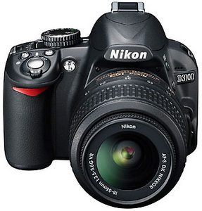

Nikon D3100

Among my favourite gadget's has to by my Nikon D3100 camera which is a DSLR camera which stands for Digital Single Lens camera.
The camera has offered me many memorable pics that i hold to heart.
Kindly indulge me as we explore the different specs which makes this camera an almost must have gadget.
General Overview
- Exceptional image detail: The D3100 is built around a 14.2 megapixel CMOS sensor, bringing not only live view but also Full HD video capture to Nikon's entry-level model for the first time. In fact, this made it the first Nikon DSLR to offer 1920x1080 movie recording.

- Catch the decisive moment: The D3100 can shoot approximately 3 frames per second—great for capturing dynamic motion and elusive facial expressions that are a challenge for any photographer. Simply rotate the release-mode selector and shoot away. Split-second shutter response eliminates the frustration of shutter delay, capturing moments that other cameras miss.
It can only record clips up to about ten minutes long (due to a 4Gb maximum file size limitation shared by all DSLRs), but this still counts as an impressive feature addition at this level.
- Fast, precise 11-point autofocus system: The D3100's precision high-speed autofocus responds immediately to changes in scene or composition, maintaining tack-sharp focus to capture fleeting expressions and fast-moving sports.